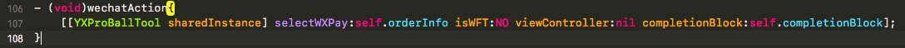
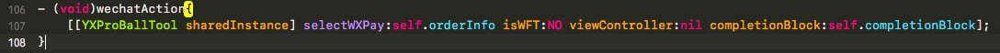
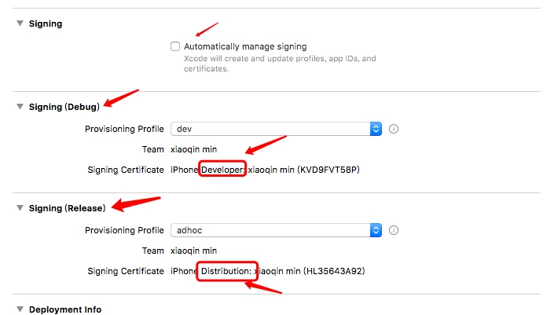
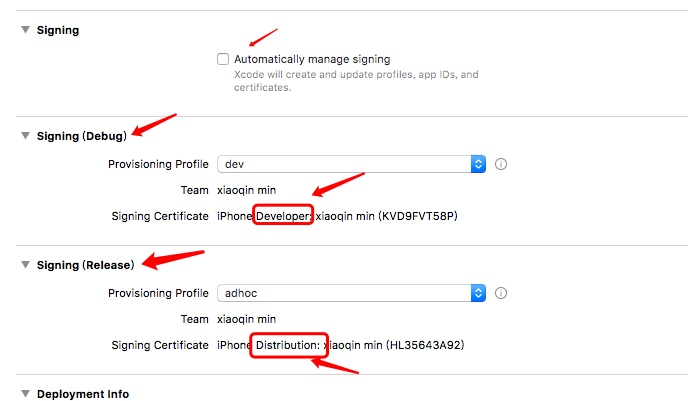

layout: post
title: "内购"
date: 2018.02.23
tag: iOS 总结
1. 导入
2. 遵循 SKProductsRequestDelegate, SKPaymentTransactionObserver 协议
3. 设置商品 ID
//在内购项目中创的商品单号
#define ProductID_IAP0p20 @"Nada.JPYF01"//20
#define ProductID_IAP1p100 @"Nada.JPYF02" //100
#define ProductID_IAP4p600 @"Nada.JPYF03" //600
#define ProductID_IAP9p1000 @"Nada.JPYF04" //1000
#define ProductID_IAP24p6000 @"Nada.JPYF05" //6000
添加观察者
-(void)viewWillAppear:(BOOL)animated{
[super viewWillAppear:animated];
// 添加观察者
[[SKPaymentQueue defaultQueue] addTransactionObserver:self];
}
移除观察者
-(void)viewWillDisappear:(BOOL)animated{
[super viewWillDisappear:animated];
// 移除观察者
[[SKPaymentQueue defaultQueue] removeTransactionObserver:self];
}
设置 UI
- (void)viewDidLoad {
[super viewDidLoad];
self.title = @"内购";
// self.navigationItem.rightBarButtonItem = [[UIBarButtonItem alloc]initWithTitle:@"测试" style:UIBarButtonItemStylePlain target:self action:@selector(test)];
// 恢复购买的按钮
UIButton * revert = [[UIButton alloc]initWithFrame:CGRectMake(20, 100, 100, 80)];
[revert setBackgroundColor:[UIColor cyanColor]];
[revert addTarget:self action:@selector(test) forControlEvents:UIControlEventTouchUpInside];
[revert setTitle:@"pay" forState:UIControlStateNormal];
[self.view addSubview: revert];
self.view.backgroundColor = [UIColor whiteColor];
}
测试内购
-(void)test{
if([SKPaymentQueue canMakePayments]){
// productID就是你在创建购买项目时所填写的产品ID
selectProductID = [NSString stringWithFormat:@"%@",ProductID1];
[self requestProductID:selectProductID];
}else{
// NSLog(@"不允许程序内付费");
UIAlertController *alertController = [UIAlertController alertControllerWithTitle:@"温馨提议" message:@"请先开启应用内付费购买功能。" preferredStyle:UIAlertControllerStyleAlert];
[alertController addAction:[UIAlertAction actionWithTitle:@"确定" style:UIAlertActionStyleDefault handler:nil]];
[self presentViewController:alertController animated:YES completion:nil];
}
}
请求所有的商品 ID
#pragma mark 1.请求所有的商品ID
-(void)requestProductID:(NSString *)productID{
// 1.拿到所有可卖商品的ID数组
NSArray *productIDArray = [[NSArray alloc]initWithObjects:productID, nil];
NSSet *sets = [[NSSet alloc]initWithArray:productIDArray];
// 2.向苹果发送请求，请求所有可买的商品
// 2.1.创建请求对象
SKProductsRequest *sKProductsRequest = [[SKProductsRequest alloc]initWithProductIdentifiers:sets];
// 2.2.设置代理(在代理方法里面获取所有的可卖的商品)
sKProductsRequest.delegate = self;
// 2.3.开始请求
[sKProductsRequest start];
}
苹果那边的内购监听
#pragma mark 2.苹果那边的内购监听
-(void)productsRequest:(SKProductsRequest *)request didReceiveResponse:(SKProductsResponse *)response{
NSLog(@"可卖商品的数量=%ld",response.products.count);
NSArray *product = response.products;
if([product count] == 0){
NSLog(@"没有商品");
return;
}
for (SKProduct *sKProduct in product) {
NSLog(@"pro info");
NSLog(@"SKProduct 描述信息：%@", sKProduct.description);
NSLog(@"localizedTitle 产品标题：%@", sKProduct.localizedTitle);
NSLog(@"localizedDescription 产品描述信息：%@",sKProduct.localizedDescription);
NSLog(@"price 价格：%@",sKProduct.price);
NSLog(@"productIdentifier Product id：%@",sKProduct.productIdentifier);
if([sKProduct.productIdentifier isEqualToString: selectProductID]){
[self buyProduct:sKProduct];
break;
}else{
//NSLog(@"不不不相同");
}
}
}
内购代码调用
#pragma mark 内购的代码调用
-(void)buyProduct:(SKProduct *)product{
// 1.创建票据
SKPayment *skpayment = [SKPayment paymentWithProduct:product];
// 2.将票据加入到交易队列
[[SKPaymentQueue defaultQueue] addPayment:skpayment];
// 3.添加观察者，监听用户是否付钱成功(不在此处添加观察者)
//[[SKPaymentQueue defaultQueue] addTransactionObserver:self];
}
实现观察者监听付钱的代理方法，只要交易发生变化就会走下面的方法
#pragma mark 4.实现观察者监听付钱的代理方法,只要交易发生变化就会走下面的方法
-(void)paymentQueue:(SKPaymentQueue *)queue updatedTransactions:(NSArray *)transactions{
/*
SKPaymentTransactionStatePurchasing, 正在购买
SKPaymentTransactionStatePurchased, 已经购买
SKPaymentTransactionStateFailed, 购买失败
SKPaymentTransactionStateRestored, 回复购买中
SKPaymentTransactionStateDeferred 交易还在队列里面，但最终状态还没有决定
*/
for (SKPaymentTransaction *transaction in transactions) {
switch (transaction.transactionState) {
case SKPaymentTransactionStatePurchasing:{
NSLog(@"正在购买");
}break;
case SKPaymentTransactionStatePurchased:{
NSLog(@"购买成功");
// 购买后告诉交易队列，把这个成功的交易移除掉
[queue finishTransaction:transaction];
[self buyAppleStoreProductSucceedWithPaymentTransactionp:transaction];
}break;
case SKPaymentTransactionStateFailed:{
NSLog(@"购买失败");
// 购买失败也要把这个交易移除掉
[queue finishTransaction:transaction];
}break;
case SKPaymentTransactionStateRestored:{
NSLog(@"回复购买中,也叫做已经购买");
// 回复购买中也要把这个交易移除掉
[queue finishTransaction:transaction];
}break;
case SKPaymentTransactionStateDeferred:{
NSLog(@"交易还在队列里面，但最终状态还没有决定");
}break;
default:
break;
}
}
}
苹果内购支付成功
// 苹果内购支付成功
- (void)buyAppleStoreProductSucceedWithPaymentTransactionp:(SKPaymentTransaction *)paymentTransactionp {
NSString * productIdentifier = paymentTransactionp.payment.productIdentifier;
// NSLog(@"productIdentifier Product id：%@", productIdentifier);
NSString *transactionReceiptString= nil;
//系统IOS7.0以上获取支付验证凭证的方式应该改变，切验证返回的数据结构也不一样了。
NSString *version = [UIDevice currentDevice].systemVersion;
if([version intValue] >= 7.0){
// 验证凭据，获取到苹果返回的交易凭据
// appStoreReceiptURL iOS7.0增加的，购买交易完成后，会将凭据存放在该地址
NSURLRequest * appstoreRequest = [NSURLRequest requestWithURL:[[NSBundle mainBundle]appStoreReceiptURL]];
NSError *error = nil;
// [NSURLSession dataTaskWithRequest:appstoreRequest completionHandler:nil]
NSData * receiptData = [NSURLConnection sendSynchronousRequest:appstoreRequest returningResponse:nil error:&error];
transactionReceiptString = [receiptData base64EncodedStringWithOptions:NSDataBase64EncodingEndLineWithLineFeed];
}else{
NSData * receiptData = paymentTransactionp.transactionReceipt;
// transactionReceiptString = [receiptData base64EncodedString];
transactionReceiptString = [receiptData base64EncodedStringWithOptions:NSDataBase64EncodingEndLineWithLineFeed];
}
// 去验证是否真正的支付成功了
[self checkAppStorePayResultWithBase64String:transactionReceiptString];
}
生成订单参数
- (void)checkAppStorePayResultWithBase64String:(NSString *)base64String {
/* 生成订单参数，注意沙盒测试账号与线上正式苹果账号的验证途径不一样，要给后台标明 */
/*
注意：
自己测试的时候使用的是沙盒购买(测试环境)
App Store审核的时候也使用的是沙盒购买(测试环境)
上线以后就不是用的沙盒购买了(正式环境)
所以此时应该先验证正式环境，在验证测试环境
正式环境验证成功，说明是线上用户在使用
正式环境验证不成功返回21007，说明是自己测试或者审核人员在测试
*/
/*
苹果AppStore线上的购买凭证地址是： https://buy.itunes.apple.com/verifyReceipt
测试地址是：https://sandbox.itunes.apple.com/verifyReceipt
*/
// NSNumber *sandbox;
NSString *sandbox;
#if (defined(APPSTORE_ASK_TO_BUY_IN_SANDBOX) && defined(DEBUG))
//sandbox = @(0);
sandbox = @"0";
#else
//sandbox = @(1);
sandbox = @"1";
#endif
NSMutableDictionary *prgam = [[NSMutableDictionary alloc] init];;
[prgam setValue:sandbox forKey:@"sandbox"];
[prgam setValue:base64String forKey:@"reciept"];
/*
请求后台接口，服务器处验证是否支付成功，依据返回结果做相应逻辑处理
0 代表沙盒 1代表 正式的内购
最后最验证后的
*/
/*
内购验证凭据返回结果状态码说明
21000 App Store无法读取你提供的JSON数据
21002 收据数据不符合格式
21003 收据无法被验证
21004 你提供的共享密钥和账户的共享密钥不一致
21005 收据服务器当前不可用
21006 收据是有效的，但订阅服务已经过期。当收到这个信息时，解码后的收据信息也包含在返回内容中
21007 收据信息是测试用（sandbox），但却被发送到产品环境中验证
21008 收据信息是产品环境中使用，但却被发送到测试环境中验证
*/
NSLog(@"字典==%@",prgam);
}
客户端验证购买凭据
#pragma mark 客户端验证购买凭据
- (void)verifyTransactionResult
{
// 验证凭据，获取到苹果返回的交易凭据
// appStoreReceiptURL iOS7.0增加的，购买交易完成后，会将凭据存放在该地址
NSURL *receiptURL = [[NSBundle mainBundle] appStoreReceiptURL];
// 从沙盒中获取到购买凭据
NSData *receipt = [NSData dataWithContentsOfURL:receiptURL];
// 传输的是BASE64编码的字符串
/**
BASE64 常用的编码方案，通常用于数据传输，以及加密算法的基础算法，传输过程中能够保证数据传输的稳定性
BASE64是可以编码和解码的
*/
NSDictionary *requestContents = @{
@"receipt-data": [receipt base64EncodedStringWithOptions:0]
};
NSError *error;
// 转换为 JSON 格式
NSData *requestData = [NSJSONSerialization dataWithJSONObject:requestContents
options:0
error:&error];
// 不存在
if (!requestData) { /* ... Handle error ... */ }
// 发送网络POST请求，对购买凭据进行验证
NSString *verifyUrlString;
#if (defined(APPSTORE_ASK_TO_BUY_IN_SANDBOX) && defined(DEBUG))
verifyUrlString = @"https://sandbox.itunes.apple.com/verifyReceipt";
#else
verifyUrlString = @"https://buy.itunes.apple.com/verifyReceipt";
#endif
// 国内访问苹果服务器比较慢，timeoutInterval 需要长一点
NSMutableURLRequest *storeRequest = [NSMutableURLRequest requestWithURL:[[NSURL alloc] initWithString:verifyUrlString] cachePolicy:NSURLRequestUseProtocolCachePolicy timeoutInterval:10.0f];
[storeRequest setHTTPMethod:@"POST"];
[storeRequest setHTTPBody:requestData];
// 在后台对列中提交验证请求，并获得官方的验证JSON结果
NSOperationQueue *queue = [[NSOperationQueue alloc] init];
[NSURLConnection sendAsynchronousRequest:storeRequest queue:queue
completionHandler:^(NSURLResponse *response, NSData *data, NSError *connectionError) {
if (connectionError) {
NSLog(@"链接失败");
} else {
NSError *error;
NSDictionary *jsonResponse = [NSJSONSerialization JSONObjectWithData:data options:0 error:&error];
if (!jsonResponse) {
NSLog(@"验证失败");
}
// 比对 jsonResponse 中以下信息基本上可以保证数据安全
/*
bundle_id
application_version
product_id
transaction_id
*/
NSLog(@"验证成功");
}
}];
}


 



 
